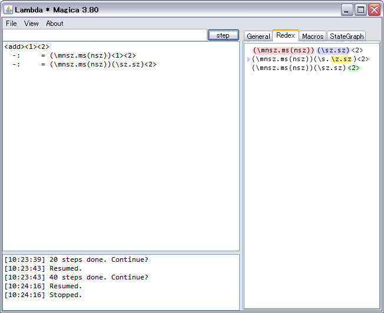

{kind=link}
{kind=link}
{kind=link}

LaTeX translation example (version >= 3.71)
まず、UTF-8では円記号 (U+00A5, ¥) とバックスラッシュ (U+005C, \) が別の文字として扱われるようになりました。
Mac OSではデフォルトの文字コードがUTF-8で、日本語配列のキーボードを使用している場合はバックスラッシュキーを 押すとデフォルトでは円記号が入力されるようです。 日本語配列キーボードでは、option(alt)キーを押しながら円記号の書かれているキーを押すことで バックスラッシュが入力できるようです。
なお、英字配列キーボードには「バックスラッシュキー」が存在し、そのままバックスラッシュが入力できます。
プログラム内で円記号を自動的にバックスラッシュに置換してしまうかは検討中です。
[追記] バージョン3.82において、円記号をバックスラッシュとして扱うように修正しました。
[NOTE] The whole contents of *.tar.gz and *.zip are currently same.
| Linux/Mac OS | lambda-magica-3.82.tar.gz |
| Windows | lambda-magica-3.82.zip |
| Version | OS | File |
| version 3.81 (2012-12-10) | Linux/Mac OS | lambda-magica-3.81.tar.gz |
| Windows | lambda-magica-3.81.zip | |
| version 3.80 (2012-12-06) | Linux/Mac OS | lambda-magica-3.80.tar.gz |
| Windows | lambda-magica-3.80.zip | |
| version 3.72 (2012-12-04) | Linux/Mac OS | lambda-magica-3.72.tar.gz |
| Windows | lambda-magica-3.72.zip | |
| version 3.71 (2012-11-29) | Linux/Mac OS | lambda-magica-3.71.tar.gz |
| Windows | lambda-magica-3.71.zip | |
| version 3.70 (2012-11-26) | Linux/Mac OS | lambda-magica-3.70.tar.gz |
| Windows | lambda-magica-3.70.zip | |
| version 3.60 (2012-11-23) | Linux/Mac OS | lambda-magica-3.60.tar.gz |
| Windows | lambda-magica-3.60.zip | |
| version 3.50 (2012-11-21) | Linux/Mac OS | lambda-magica-3.50.tar.gz |
| Windows | lambda-magica-3.50.zip | |
| version 3.00 (2012-11-15) | Linux/Mac OS | lambda-magica-3.00.tar.gz |
| Windows | lambda-magica-3.00.zip |
wget http://www.ueda.info.waseda.ac.jp/~shinobu/lambda-magica/lambda-magica-3.82.tar.gz tar xvzf lambda-magica-3.82.tar.gz cd lambda-magica ./run.sh
GitHub Repository: https://github.com/YuukiARIA/LambdaMagica
| ctrl + + | magnify font size |
| ctrl + - | minify font size |
| ctrl + 0 | default font size |
| shift + enter | step backward (version >= 3.71) |
|
|
|  |
Redex selection view. All beta/eta-redexes (and macro expansion) are enumerated in here. The redexes colored red and blue represent beta-redexes. And similarly yellows are eta-redexes, greens are macro expansion. |
|
Reduction graph (experimental). Input lambda expression and click start to initiate state search. The graph is dynamically constructed, layouted, and drawn. Any macros contained in the input lambda term are expanded recursively before starting. The reduction search will not begin if undefined macros are contained in the input. |
LaTeX translation example (version >= 3.71)
| Version | Release Date | Descriptions |
| 3.82 | November 26, 2013 |
|
| 3.81 | December 10, 2012 |
|
| 3.80 | December 6, 2012 |
|
| 3.72 | December 4, 2012 |
|
| 3.71 | November 29, 2012 |
|
| 3.70 | November 26, 2012 |
|
| 3.60 | November 23, 2012 |
|
| 3.50 | November 21, 2012 |
|
| 3.00 | November 15, 2012 |
|
| 2.40 | November 3, 2011 |
|
| 2.35 | November, 2011 |
|
© 2011 YuukiARIA